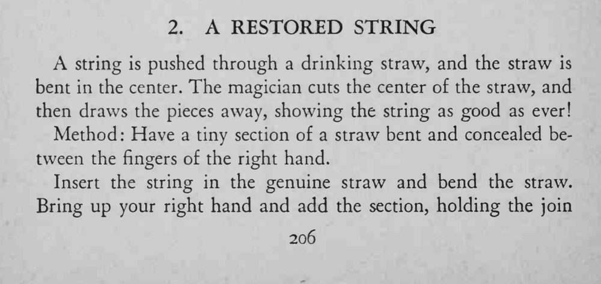
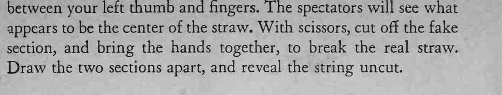

细绳穿过一根吸管，吸管在中间被剪断、拉开，里面的细绳却完好无损。
假吸管和真吸管的弯折角度要一致，接缝捏在手里别让人看出。


A string is pushed through a drinking straw, and the straw is bent in the center. The magician cuts the center of the straw, and then draws the pieces away, showing the string as good as ever! Method: Have a tiny section of a straw bent and concealed between the fingers of the right hand. Insert the string in the genuine straw and bend the straw. Bring up your right hand and add the section, holding the join appears to be the center of the straw. With scissors, cut off the fake section, and bring the hands together, to break the real straw. Draw the two sections apart, and reveal the string uncut.